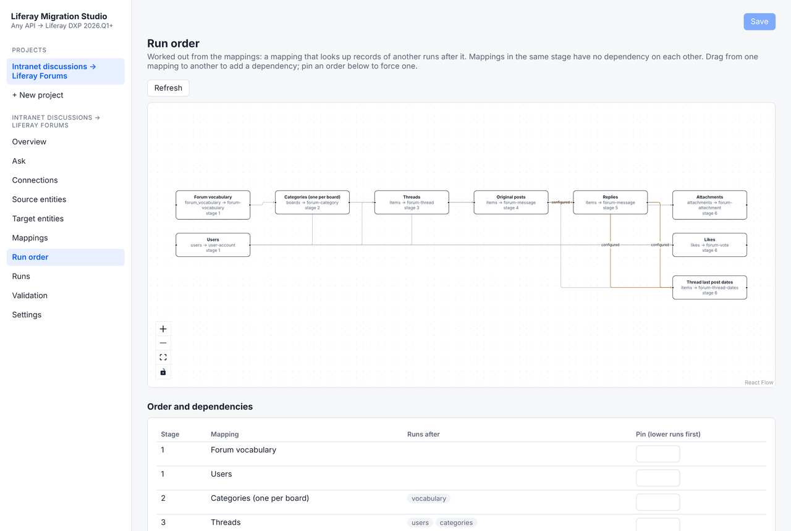
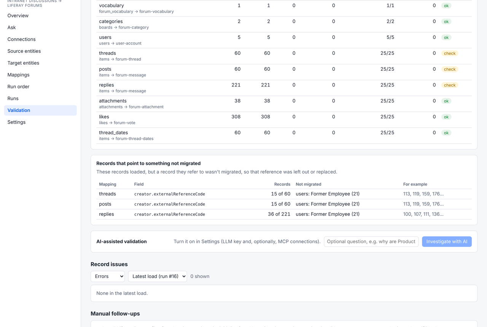
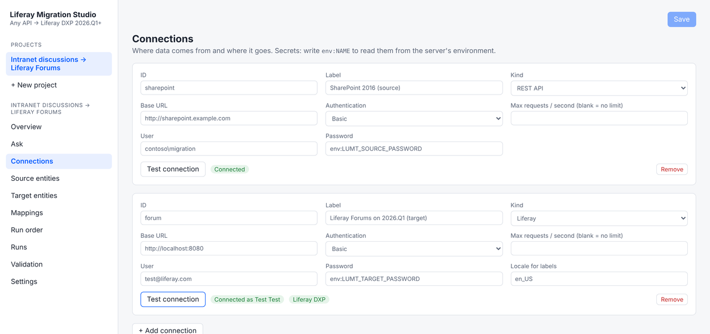
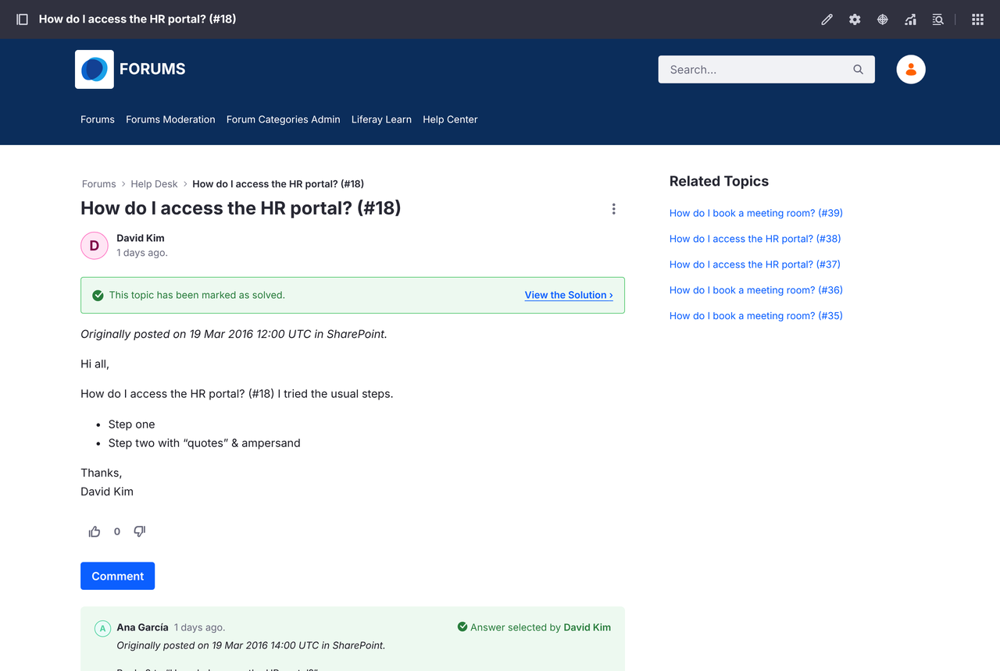

将内容从旧版 Liferay 及其他提供 API 的系统迁移到 Liferay DXP 2026.Q1 及更高版本。在 Web 界面中配置映射，通过试运行检查每个请求，再大规模加载数据，最后对照源系统验证结果。
功能
- 在 Web 界面中映射. 连接源系统和 Liferay DXP，映射实体和字段，并在写入任何数据之前用真实记录预览将要发送的请求。
- 自动确定执行顺序. 执行顺序由映射决定：先词汇表后分类，先父项后子项，先作者后帖子。
- 试运行与可重复加载. 先查看每个请求。加载以并行批次运行，可以暂停和继续，重复运行只会更新记录而不会产生重复。
- 验证. 检查记录数量，将从 Liferay 读回的已迁移记录逐字段比较，并列出其关联记录未被迁移的记录。
- 现成的迁移方案. 将 Liferay DXP 7.3 及更高版本的 Web 内容迁移到 2026.Q3 的新 CMS（已在真实 Liferay 环境中测试）。SharePoint 讨论板到 Liferay Forums 的迁移即将推出。
- 可选的 AI 功能. 提供映射建议、解释验证中发现的问题，以及一个可以执行试运行但只会提议加载的聊天助手。可使用托管模型，也可使用自行部署的模型。
截图



